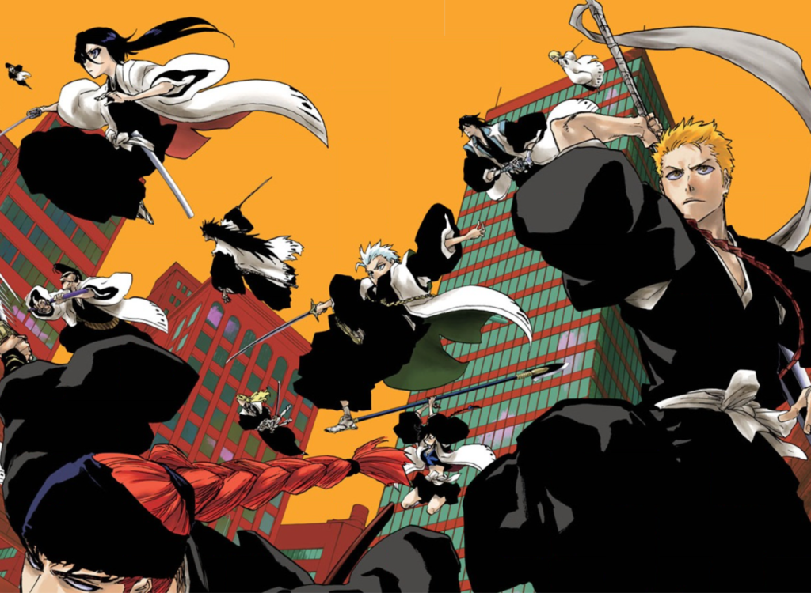
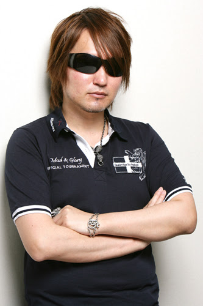
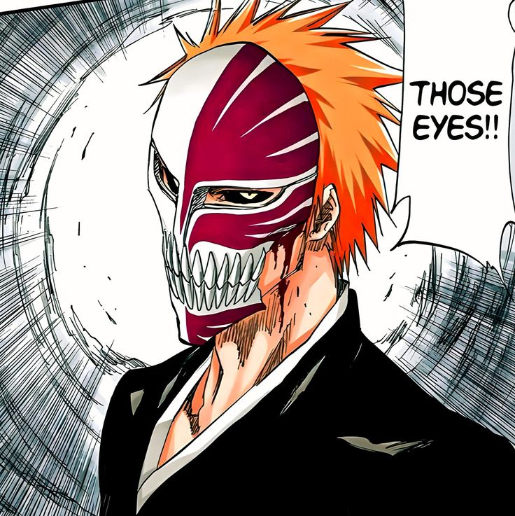
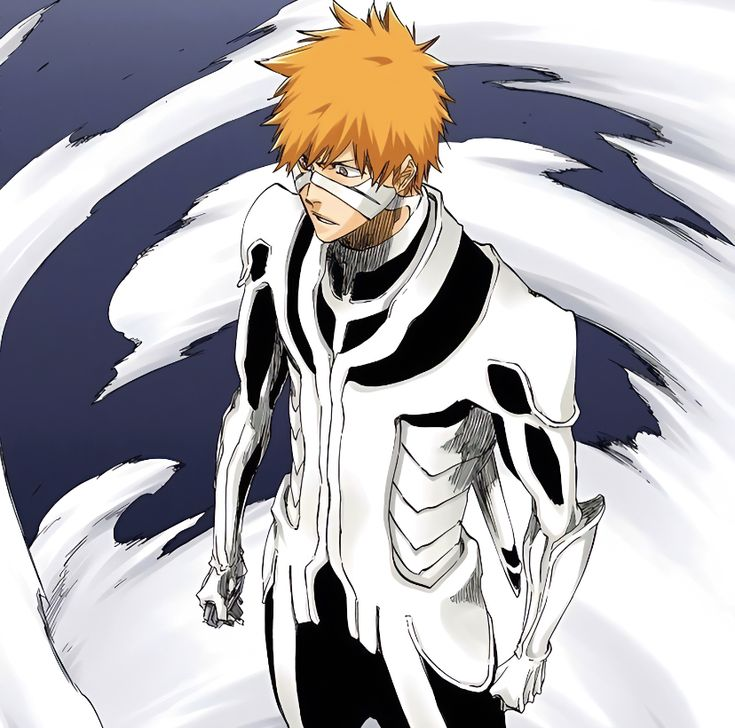
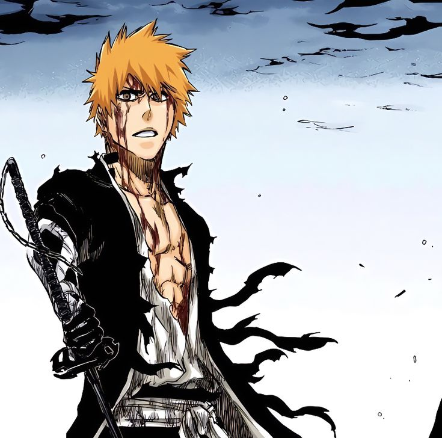

Bleach 20th Anniversary
Celebrate 20 years of Bleach with this exclusive volume featuring cover art from the series launch on August 20, 2001 in Weekly Shonen Jump magazine
20 YEARS OF BLEACH: A NEW BEGINNING

The great curiosity, however, was the announcement made on the final page of the special, which claimed to be the beginning of a new arc for the story. The news caught everyone by surprise and left us confused at the same time. Without confirming anything, fans remain in wait for the announcement of the continuation of the manga as well.
Protagonist

Bleach tells the story of Ichigo Kurosaki, a 15-year-old with orange hair, a guy with few friends (and so is often mistaken for a delinquent) and very intelligent, but who has a very unusual secret: he has always been able to communicate with spirits.
Combining this ability with the fact that he was a very kind person, Ichigo always began to help the souls that asked for help. Until one night he meets a Shinigami (goddess of Death) and is attacked by a Hollow (evil spirit), making his life completely change.
Bleach: Thousand-Year Blood War

The great curiosity, however, was the announcement made on the final page of the special, which claimed to be the beginning of a new arc for the story. The news caught everyone by surprise and left us confused at the same time. Without confirming anything, fans remain in wait for the announcement of the continuation of the manga as well.
Creator

Kubo began drawing manga during high school, in which he was part of the Anime Club. It was also in high school that he created his first manga: Zombie Powder, which was published weekly in Shonen Jump magazine. However, with the lack of success of the manga, the series was canceled after reaching 4 volumes.
Later in his career, after the failure with ZP, Kubo created a new manga, called Bleach, and sent it to Weekly Shonen Jump, hoping that the manga would be published. However, Bleach was rejected due to similarities with the manga Yu Yu Hakusho that was being published by the magazine at the time.
Even though Bleach impressed the group of readers who controlled the series edited by the magazine, the rejection caused Kubo to lose hope. This changed when Dragon Ball author Akira Toriyama sent Kubo a letter reassuring him and inspiring him to continue with the manga, saying he had enjoyed his work very much. After this, Tite again took the manga to the Shonen Jump, which, to surprise, was accepted this time. Bleach is now published weekly by Weekly Shonen Jump and currently surpassing 400 published chapters.
Transformations

.jpeg)

.jpeg)


.jpeg)
